ミラココア → 1台買い替え完全分析（奥様のキャンバスはそのまま）
残価率71.9%（5年後・業者オークション実データ）、燃費27.8km/L、HVバッテリー10年保証。減価償却の観点から最も「もったいなくない」選択です。
5年でローン完済後、月々の返済がゼロに。その後2〜3年乗り続けることで1年あたりのコストが最小化されます。5〜7年保有が最もコスパ優秀です。
| 項目 | ヤリスクロス HV Z | フロンクス |
|---|---|---|
| 新車価格 | 288.7万円 | 254.1万円 |
| 5年後売却額（推定） | 約208万円（71.9%） | 約119万円（47%） |
| 5年間維持費合計 | 約96万円 | 約111万円 |
| 5年間実質負担 | 約177万円 | 約246万円 |
| 月換算（5年） | 約2.95万円/月 | 約4.1万円/月 |
※維持費はガソリン代（年1万km・170円/L）・保険・税金・車検を含む。売却額は業者オークション実データ（ヤリスクロス）および推定値（フロンクス）。
Omiさんへの最終推薦車
| 新車価格 | 288.7万円（HV Z）/ 239.4万円（HV G） |
| エンジン | 1.5L 直3 + モーター（ハイブリッド） |
| 燃費（WLTC） | HV Z: 27.8km/L / HV G: 30.2km/L |
| ボディサイズ | 全長4,180 × 全幅1,765 × 全高1,590mm |
| 最小回転半径 | 5.3m |
| 車両重量 | 1,170kg（HV 2WD） |
| 航続距離（HV） | 約900〜1,108km |
| 自動車税 | 30,500円/年（1.5L以下） |
| 重量税 | 初回免除（エコカー減税）→ 以降12,300円/2年 |
| 経過年数 | 平均残価率 | HV Z 残価率 |
|---|---|---|
| 当年（未使用） | 92.1% | 97.6% |
| 1年落ち | 85.4% | 90.7% |
| 2年落ち | 86.0% | 90.9% |
| 3年落ち | 82.5% | 82.5% |
| 4年落ち | 83.5% | 95.5% |
| 5年落ち | 80.3% | 71.9% |
※出典: junku.com 業者オークション相場データ（2025年更新）。5年後71.9%は実際の買取相場から算出。
シンガポール・バングラデッシュ等への輸出需要が国内相場を下支え。トヨタブランドの信頼性と世界的なSUV人気が重なり、5年後でも約208万円（HV Z・288.7万円購入時）で売却できます。
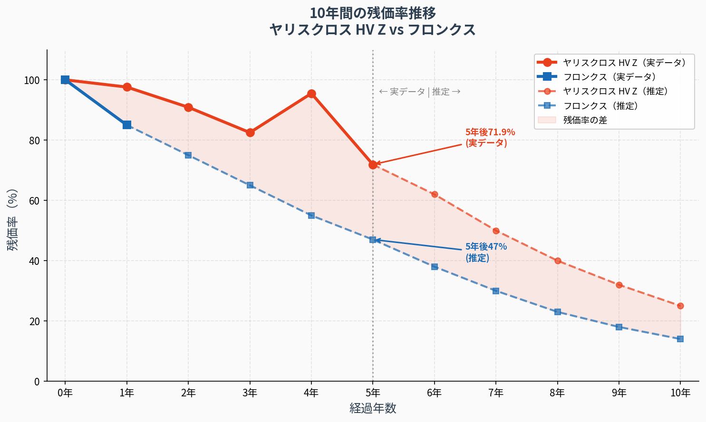
トヨタのハイブリッドバッテリーは10年または20万kmの保証付き（初回登録から）。長期保有でも高額修理リスクが低く、5〜7年乗り続けても安心です。30万km超の走行実績もあり、信頼性は実証済みです。
比較対象・第2候補
| 新車価格 | 254.1万円（2WD）/ 273.9万円（4WD） |
| エンジン | 1.5L 直4 + マイルドハイブリッド（6AT） |
| 燃費（WLTC） | 2WD: 19.0km/L / 4WD: 17.8km/L |
| ボディサイズ | 全長3,995 × 全幅1,765 × 全高1,550mm |
| 最小回転半径 | 4.8m（ヤリスクロスより小さい） |
| 車両重量 | 1,035kg（2WD） |
| 自動車税 | 30,500円/年（1.5L以下） |
| 発売 | 2024年10月（日本発売） |
2024年10月発売のため、5年後・10年後の残価率は推定値のみ。ガリバーの現在データでは49.2〜85.1%と幅広く、安定性は未知数です。マイルドHVのため本格HVほど輸出需要が高くない可能性があります。
| データ源 | 残価率 | 備考 |
|---|---|---|
| junku.com（3年落ち） | 92.4% | 発売直後・高め |
| ガリバー（現在） | 49.2〜85.1% | 幅広い |
| 5年後（推定） | 約47% | 推定値 |
| 10年後（推定） | 約14% | 推定値 |
ヤリスクロス HV Z vs フロンクス vs 競合車種
| 比較項目 | ヤリスクロス HV Z | フロンクス |
|---|---|---|
| 新車価格 | 288.7万円 | 254.1万円 |
| 燃費（WLTC） | 27.8km/L | 19.0km/L |
| 5年後残価率 | 71.9%（実データ） | 47%（推定） |
| 5年間実質負担 | 約177万円 | 約246万円 |
| 年間ガソリン代 | 約6.1万円 | 約8.9万円 |
| HVバッテリー保証 | 10年/20万km | なし（マイルドHV） |
| 最小回転半径 | 5.3m | 4.8m |
| 全長 | 4,180mm | 3,995mm |
| 後席の広さ | やや狭め | 実用的な広さ |
| 内装の高級感 | 標準的 | 高級感あり |
| 安全装備の充実度 | 非常に充実 | 充実 |
| 長期信頼性データ | 豊富（5年以上） | 少ない（1年強） |
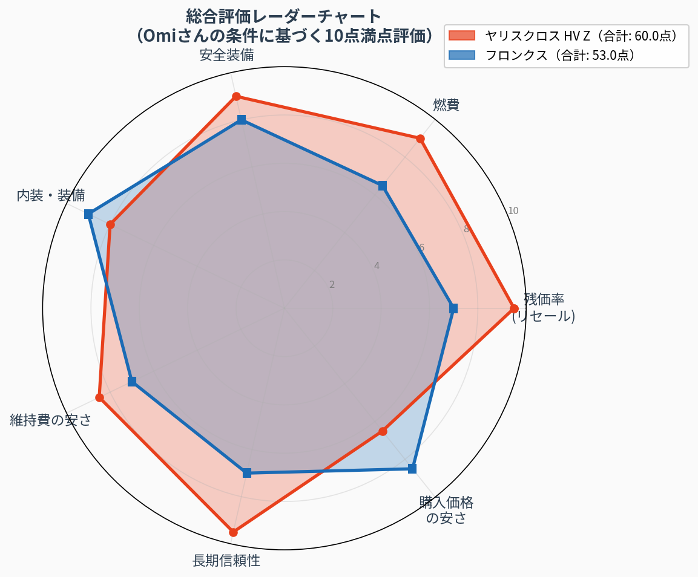
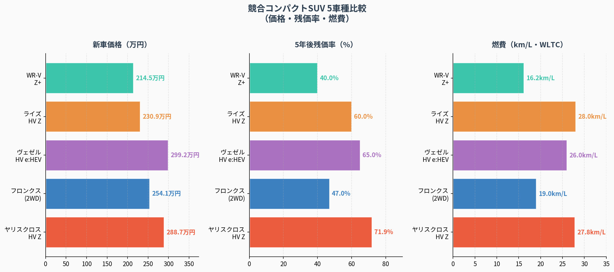
| 車種 | 価格 | 5年残価率 | 燃費 |
|---|---|---|---|
| ヤリスクロス HV Z | 288.7万 | 71.9% | 27.8km/L |
| フロンクス | 254.1万 | 47%（推定） | 19.0km/L |
| ヴェゼル HV | 299.2万 | 65%（推定） | 26.0km/L |
| ライズ HV Z | 230.9万 | 60%（推定） | 28.0km/L |
| WR-V Z+ | 214.5万 | 40%（推定） | 16.2km/L |
※残価率はヤリスクロスのみ業者オークション実データ。他は推定値。燃費はWLTCモード。
実質負担額・年間維持費・減価償却
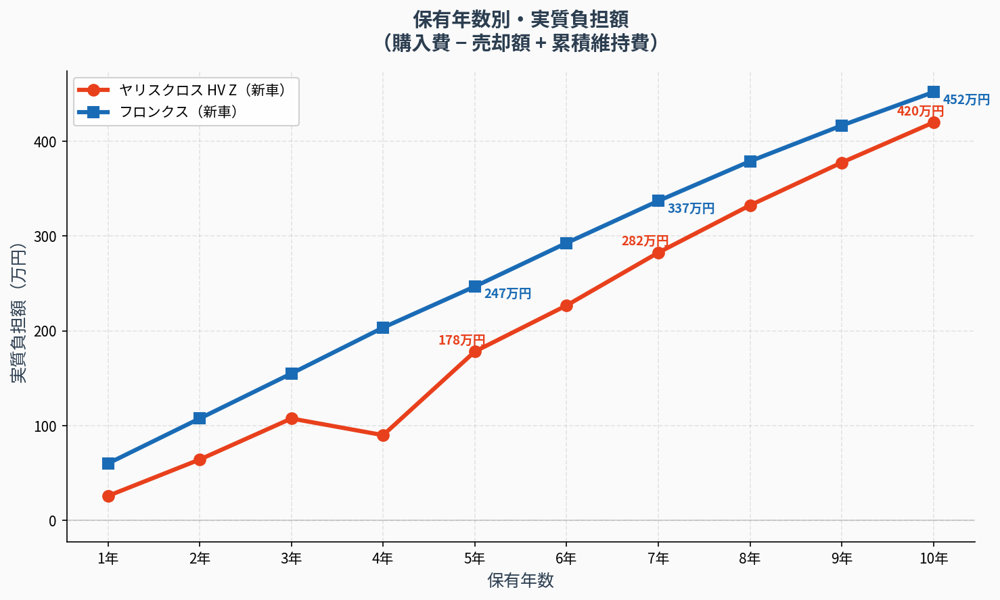
| 保有年数 | ヤリスクロス HV Z | フロンクス |
|---|---|---|
| 3年後売却 | 約152万円 | 約130万円 |
| 5年後売却 | 約177万円 | 約246万円 |
| 7年後売却 | 約278万円 | 約315万円 |
| 10年後売却 | 約422万円 | 約447万円 |
※実質負担額 ＝ 購入費 − 売却額 + 累積維持費。維持費はガソリン代・保険・税金・車検含む年間概算。
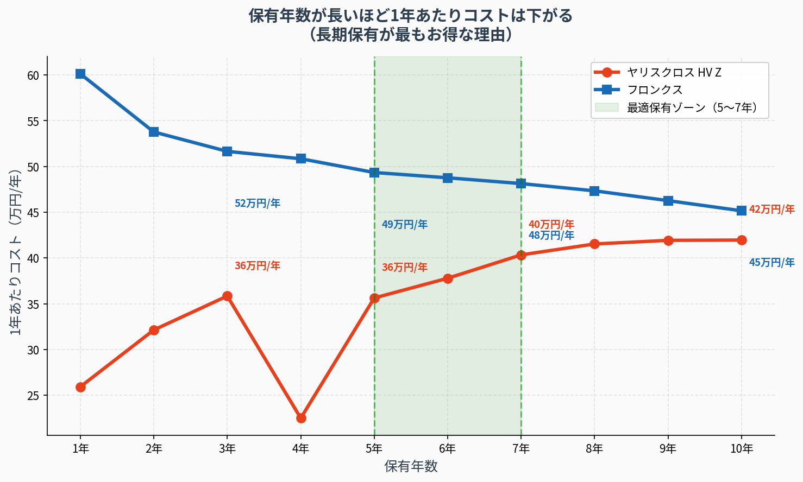
ヤリスクロスは5年保有で1年あたり約35万円（月2.9万円）が底値圏。それ以上乗り続けても修理費が増えるため、5〜7年での売却が最もコスパ優秀です。
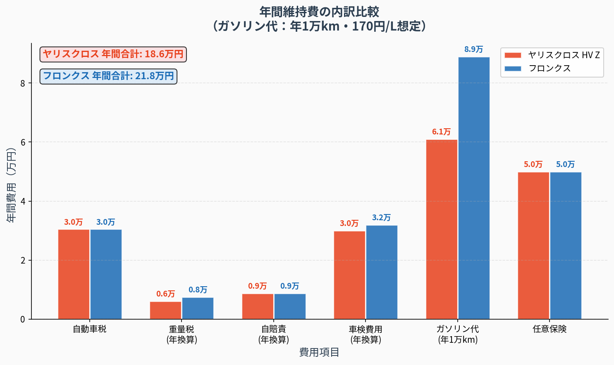
| 費用項目 | ヤリスクロス HV Z | フロンクス |
|---|---|---|
| 自動車税 | 30,500円 | 30,500円 |
| 重量税（年換算） | 0円→6,150円 | 7,500円 |
| 自賠責（年換算） | 8,825円 | 8,825円 |
| 車検費用（年換算） | 約30,000円 | 約32,000円 |
| ガソリン代（年1万km） | 約61,000円 | 約89,000円 |
| 任意保険（参考） | 約50,000円 | 約50,000円 |
| 年間合計 | 約18〜20万円 | 約22〜24万円 |
※ガソリン代はレギュラー170円/L・年間走行距離1万kmで計算。任意保険は30歳・等級参考値。
車は購入した瞬間から価値が下がり始めます。この「価値の目減り」が減価償却です。
例：ヤリスクロス HV Z（288.7万円購入）の場合
・1年後：約281万円の価値（約2.4%減）
・3年後：約238万円の価値（約17.5%減）
・5年後：約208万円の価値（約28.1%減）
つまり5年間で約80万円の価値が失われます。これが「減価償却コスト」です。フロンクスは5年後に約135万円の価値が失われる（推定）ため、ヤリスクロスの方が約55万円お得です。
車の価値は最初の数年で急激に下がり、その後は緩やかになります。
①購入直後が最も損：新車を買った瞬間に約10〜15%の価値が失われます（登録費用・諸費用含む）。
②5年以降は下落ペースが緩やか：5年乗れば「急落期」を乗り越えており、1年あたりのコストが安定します。
③ローン完済後は月々の支出が激減：60回払いなら5年でローン完済。その後は維持費だけになり、家計に余裕が生まれます。
賢いローンの組み方
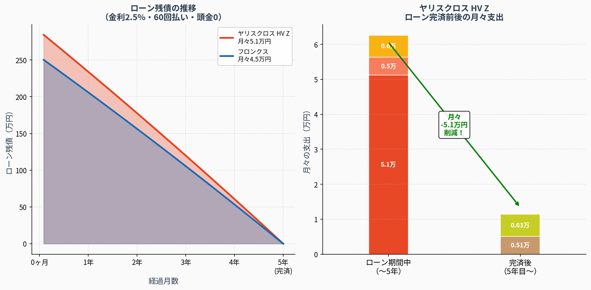
| 条件 | ヤリスクロス HV Z | フロンクス |
|---|---|---|
| 借入額（頭金0） | 288.7万円 | 254.1万円 |
| 金利 | 2.5% | 2.5% |
| 回数 | 60回（5年） | 60回（5年） |
| 月々の返済額 | 約51,000円 | 約44,900円 |
| 総支払額 | 約306万円 | 約269万円 |
| 利息総額 | 約17.3万円 | 約14.9万円 |
月々の車費用：ローン51,000円 + 維持費16,000円 = 約67,000円/月
月々の車費用：維持費のみ = 約16,000円/月
→ 毎月51,000円の余裕が生まれる！
完済から2年間で約122万円の余裕資金が蓄積。次の車の頭金に充当可能。
ディーラーローン（金利3〜5%）より銀行マイカーローン（金利1〜2%）の方が総支払額を10〜20万円削減できます。十八親和銀行・長崎銀行等のマイカーローンを事前に確認しましょう。
| 十八親和銀行 | マイカーローン 年1.5〜2.5%（要審査） |
| 長崎銀行 | マイカーローン 年1.8〜3.0%（要審査） |
| JAバンク長崎 | 組合員向け低金利ローン（要確認） |
| ディーラーローン | トヨタファイナンス 年3.9%（参考） |
※金利は2026年3月時点の参考値。実際の金利は審査・条件により異なります。
Omiさんの「5〜10年乗るつもり」に対応
5〜10年乗るなら、初期の高い減価償却コストが薄まり、1年あたりのコストは大幅に下がります。ヤリスクロスは長期保有でこそ真価を発揮します。
| 保有年数 | ヤリスクロス HV Z | フロンクス |
|---|---|---|
| 5年保有（1年あたり） | 約35万円/年 | 約49万円/年 |
| 7年保有（1年あたり） | 約40万円/年 | 約45万円/年 |
| 10年保有（1年あたり） | 約42万円/年 | 約45万円/年 |
5年後71.9%（実データ）→ 10年後約25%（推定）。7〜8年での売却が最も合理的なタイミングです。
10年後約14%（推定）。マイルドHVのため長期保有での信頼性データが少なく、修理リスクが未知数。
①減価償却の観点：購入直後が最も価値の下落が大きい。5年以降は下落ペースが緩やかになり、1年あたりコストが安定。
②ローン完済後の恩恵：60回払いで5年後にローン完済。その後は月々の返済がなくなり、維持費だけになる。手取りに余裕が生まれる。
③乗り換えコストの回避：乗り換えのたびに登録費用・諸費用で20〜40万円かかる。長く乗ることでこのコストを節約できる。
④ヤリスクロスは特に長期向き：HVバッテリー10年保証＋トヨタの高信頼性で、10年乗っても大きなトラブルリスクが低い。
Omiさんの条件に合わせた最適な組み合わせを徹底解説
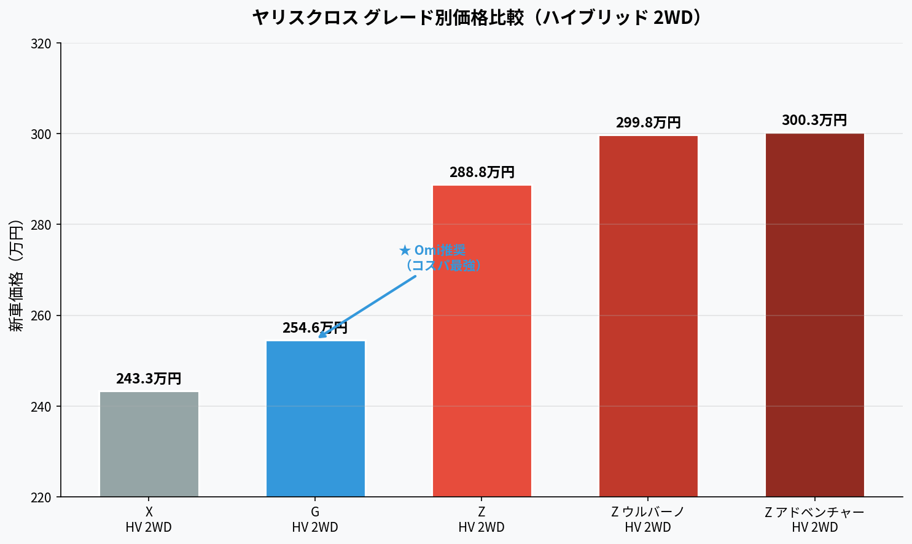
| グレード | G HV 2WD | Z HV 2WD |
|---|---|---|
| 新車価格 | 254.6万円 | 288.8万円 |
| 燃費（WLTC） | 30.2km/L | 27.8km/L |
| タイヤサイズ | 16インチ（交換安い） | 18インチ（交換高い） |
| シート | 上級ファブリック | 合成皮革+ツィード |
| BSM・パノラミック | オプション追加可 | 標準装備 |
| シートヒーター | オプション追加可 | 標準装備 |
| ディスプレイオーディオ | 標準（7インチ） | Plus（大画面） |
| 内装色 | ブラックのみ | ブラック+カーキ |
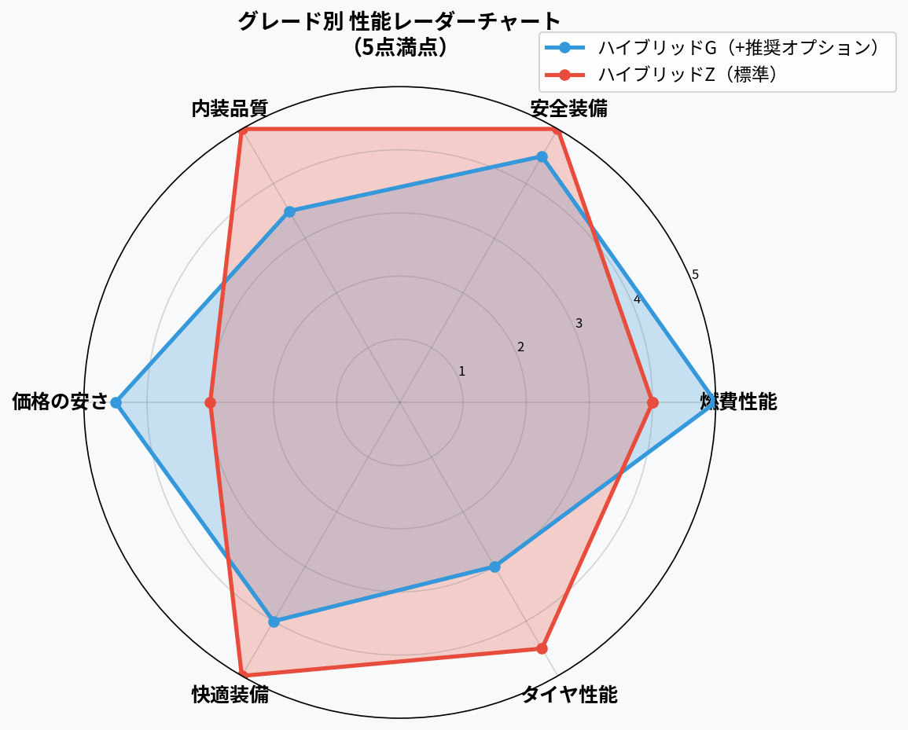
📌 ポイント：GはオプションでZと同等の安全装備を追加可能。燃費はGが優位。Zは内装品質・快適装備で上回る。
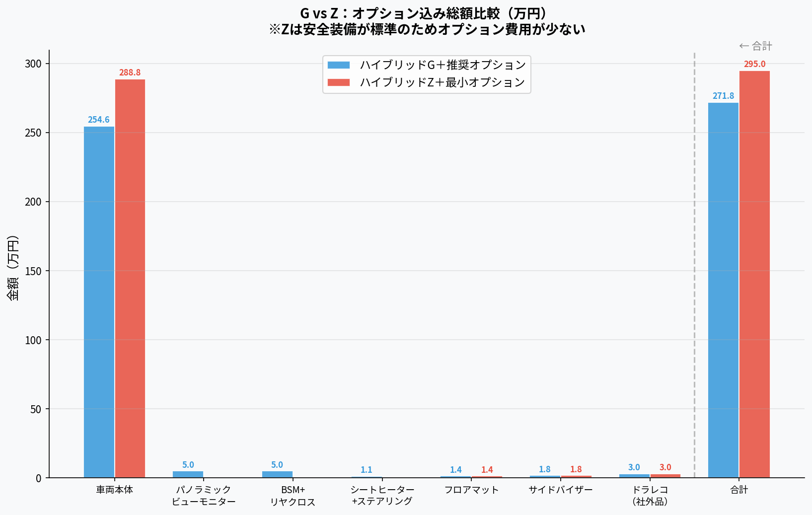
Gグレード＋推奨オプション ≒ 271.8万円
Zグレード＋最小オプション ≒ 295.0万円
差額は約23万円。ただし10年間の燃費・タイヤ差を考えると…
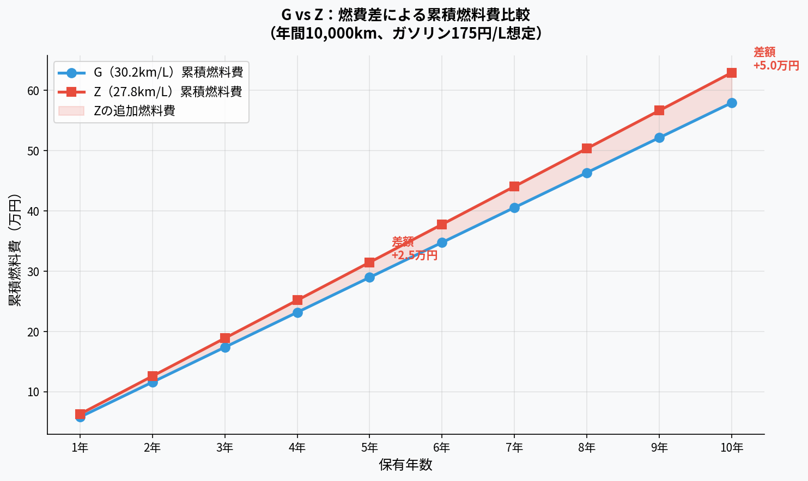
| 保有期間 | G（30.2km/L） | Z（27.8km/L） | 差額 |
|---|---|---|---|
| 年間燃料費 | 約5.8万円 | 約6.3万円 | +0.5万円/年 |
| 5年間合計 | 約29万円 | 約31.5万円 | +2.5万円 |
| 10年間合計 | 約57.9万円 | 約62.9万円 | +5万円 |
※年間走行距離1万km・ガソリン175円/Lで試算
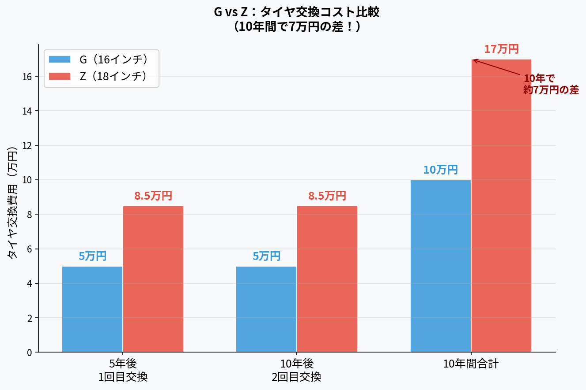
| G（16インチ） | 4本 約4〜6万円 → 10年で約10万円 |
| Z（18インチ） | 4本 約7〜10万円 → 10年で約17万円 |
| 10年間の差 | 約7万円の差！長期保有ほど影響大 |
※タイヤ交換は5年ごと1回を想定。価格は銘柄・店舗により異なります。
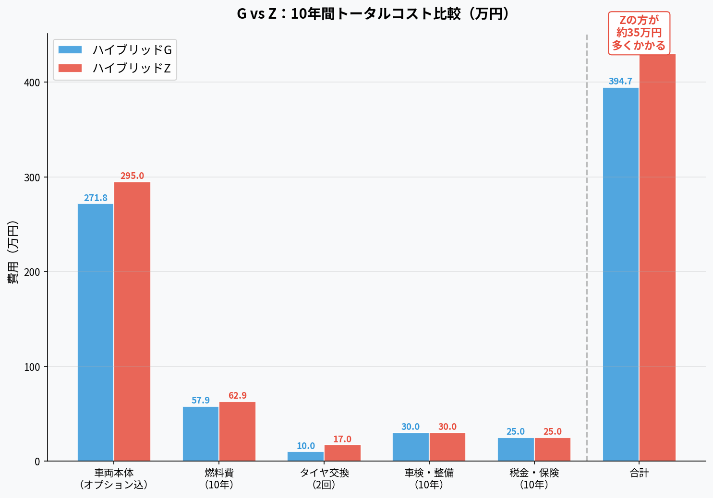
| 費目 | G HV | Z HV |
|---|---|---|
| 車両本体（オプション込） | 271.8万円 | 295.0万円 |
| 燃料費（10年） | 57.9万円 | 62.9万円 |
| タイヤ交換（2回） | 10万円 | 17万円 |
| 車検・整備（10年） | 30万円 | 30万円 |
| 税金・保険（10年） | 25万円 | 25万円 |
| 10年間合計 | 394.7万円 | 429.9万円 |
月換算で約2,900円/月の差。長期保有ほどGグレードの優位性が際立ちます。
※メーカーオプションは注文時のみ選択可。ディーラーオプションは後付け可能。
🔴 メーカーオプション（注文時に決定・後付け不可）
| パノラミックビューモニター | ★必須 33,000〜49,500円 |
| BSM+リヤクロストラフィック | ★必須 49,500円 |
| シートヒーター+ステアリングヒーター | 推奨 11,000円 |
| ハンズフリーパワーバックドア | テニス荷物に便利 77,000円 |
| アクセサリーコンセント（HV） | アウトドア・防災 44,000円 |
※GグレードはBSM・パノラミック・シートヒーターがオプション。Zは標準装備。
🔵 ディーラーオプション（後付け可能）
| フロアマット（ベーシック） | ★必須 14,300円 |
| サイドバイザー | 推奨 17,600円 |
| ドライブレコーダー（前後） | ★必須 社外品2〜4万円 |
| アームレスト | あると快適 19,800円 |
❌ 不要・優先度低いオプション
| ボディコーティング（ディーラー） | 洗車しない方針なら不要。専門店の方が安い |
| 寒冷地仕様 | 佐世保は温暖なので不要 |
| ナビキット | スマホ連携で代替可。標準DAで十分 |
| LEDヘッドランプ（Gのみ） | 71,500円と高額。Zならフル標準 |
案①：ハイブリッドG 2WD ＋ 推奨オプション
車両本体 254.6万円 ＋ オプション計 約17.2万円
合計 約271.8万円
10年間トータル：394.7万円 / 月換算 3.3万円
✅ 燃費最強（30.2km/L）
✅ タイヤ交換費用が安い（16インチ）
✅ 10年で約35万円お得
⚠️ 内装はZより質素
案②：ハイブリッドZ 2WD ＋ 最小オプション
車両本体 288.8万円 ＋ オプション計 約6.2万円
合計 約295.0万円
10年間トータル：429.9万円 / 月換算 3.6万円
✅ 安全装備・快適装備が最初から全部入り
✅ 合成皮革シートで「人を乗せても恥ずかしくない」
✅ 大画面ディスプレイオーディオPlus
⚠️ 10年間で約35万円多くかかる
「人を乗せても恥ずかしくない」「最新技術大好き」という条件を重視するならZ推奨。月額300円の差（35万円÷10年÷12ヶ月）で内装・装備の満足度が大きく変わります。一方、純粋にコスパ・燃費・長期維持費を最小化したいならG推奨。どちらを選んでも後悔しない選択です。
具体的な購入手順・注意点
ディーラー査定前にMOTA・ナビクル等の一括査定サービスを活用し、相場を把握。複数店で査定を取得してからディーラー交渉に臨む。
十八親和銀行・長崎銀行等で事前審査を申し込む。ディーラーローンより金利が低い場合が多く、総支払額を削減できる。
佐世保市内のトヨタディーラーで試乗。HV Z（288.7万円）とHV G（239.4万円）の装備差を確認。予算次第でGグレードも選択肢。
新車は決算期（3月・9月）が最も値引きが大きい。2026年3月は今まさに絶好のタイミング。目標値引き：10〜15万円。
ETC・フロアマット・ドライブレコーダーは必須。不要なオプションは断る勇気が大切。リセールに影響しないオプションは控えめに。
| 🥇 最強 | プラチナホワイトパールマイカ |
| 🥈 強い | ブラック（ブラックマイカ） |
| 🥉 普通 | シルバーメタリック |
| ⚠️ 注意 | 個性的な色（黄・緑等）は避けた方が無難 |
※白・黒・シルバーは中古車市場での需要が高く、売却時に有利です。
| 観点 | 新車 | 中古車（2〜3年落ち） |
|---|---|---|
| 購入価格 | 288.7万円 | 約230〜250万円 |
| 保証 | メーカー保証フル | 残存保証のみ |
| 禁煙車の確実性 | 確実 | 要確認 |
| 最新装備 | 最新 | やや古い可能性 |
| コスパ | 普通 | 高い |
「禁煙車がいい」「最新技術大好き」という条件から、新車または認定中古車（1〜2年落ち・禁煙確認済み）がベスト。2026年3月は決算期のため新車値引きが最大になるタイミングです。